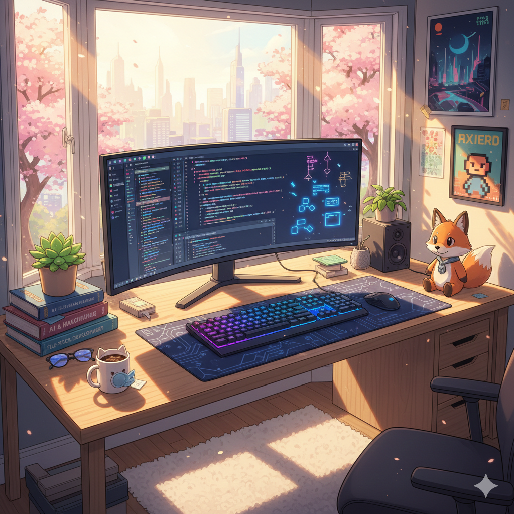
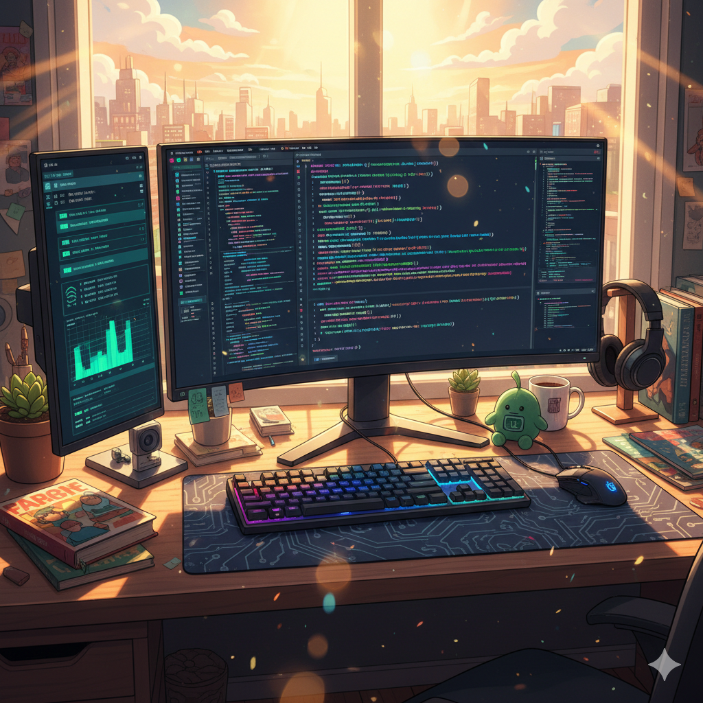
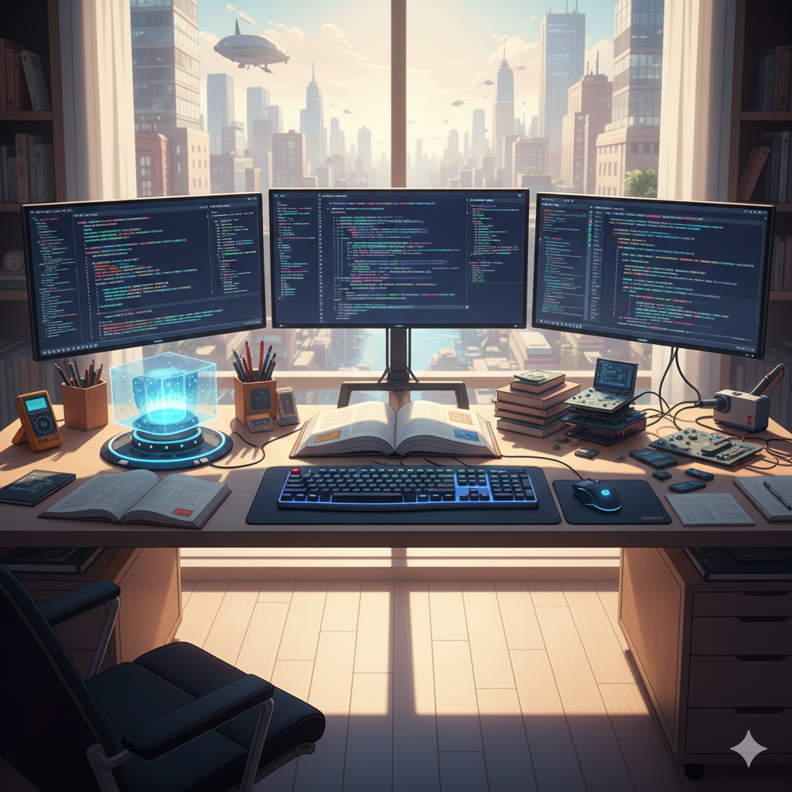

Project I - Responsive Design
A brief description of the problem solved and the technologies used (e.g., HTML, CSS, JS).
View Live Demo →A passionate Developer dedicated to building accessible, high-performance web experiences.

A brief description of the problem solved and the technologies used (e.g., HTML, CSS, JS).
View Live Demo →
Interactive UI built with accessibility best practices in mind.
View Live Demo →
Performance-focused app with optimized asset delivery.
View Live Demo →Have a question or want to work together? Fill out the form below. I am always open to discussing new projects, creative ideas, or opportunities to be part of your visions.